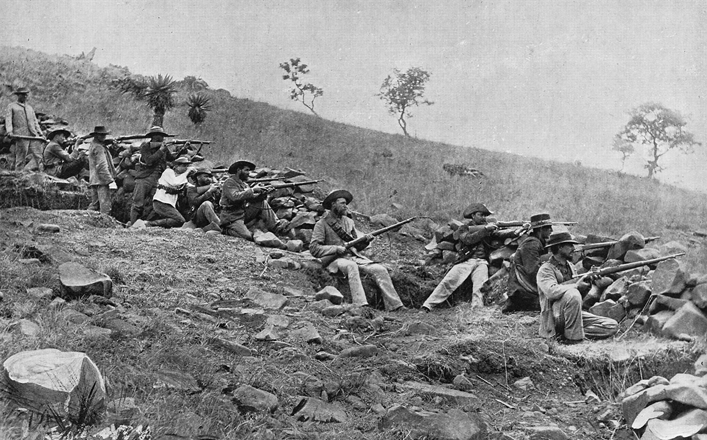

The History of South Africa
The Apartheid
Apartheid was a political and social system in South Africa during the era of White minority rule. It enforced racial discrimination against non-Whites, mainly focused on skin colour and facial features. This existed in the twentieth century, from 1948 until the early-1990s. The word apartheid means "distantiation” in the Afrikaans language.[1] Racial segregation had existed in Southern Africa for centuries, but when the apartheid legislation was introduced by the National Party in 1948; it was strictly enforced and became institutionalized Under the system, the people of South Africa were divided by their race and the different races were forced to live separately from each other. There were laws in place to ensure that segregation was abided by. The apartheid system in South Africa was abolished in 1994, when a new constitution was ratified which abolished the previous system of segregation.[2] The last President who held office during the apartheid era was Frederik Willem de Klerk; who was responsible for holding negotiations with political prisoner Nelson Mandela to bring an end to apartheid.[3] Following these successful negotiations, Nelson Mandela was elected to the Presidency of South Africa after multi-racial elections were held in April 1994, and became the first black person to hold the position.[4][5] The pair were awarded the Nobel Peace Prize for their efforts. Today, the term apartheid is sometimes used for similar segregational systems in other countries.
Nelson Mandela
Nelson Mandela was a social rights activist, politician and philanthropist who became South Africa’s first black president from 1994 to 1999. After becoming involved in the anti-apartheid movement in his 20s, Mandela joined the African National Congress in 1942. For 20 years, he directed a campaign of peaceful, nonviolent defiance against the South African government and its racist policies. Beginning in 1962, Mandela spent 27 years in prison for political offenses. In 1993, Mandela and South African President F.W. de Klerk were jointly awarded the Nobel Peace Prize for their efforts to dismantle the country's apartheid system. For generations to come, Mandela
Civil War
The Anglo-Zulu War was fought in 1879 between the British Empire and the Zulu Kingdom. Following Lord Carnarvon's successful introduction of federation in Canada, it was thought that similar political effort, coupled with military campaigns, might succeed with the African kingdoms, tribal areas and Boer republics in South Africa. In 1874, Sir Henry Bartle Frere was sent to South Africa as High Commissioner for the British Empire to bring such plans into being. Among the obstacles were the presence of the independent states of the South African Republic and the Kingdom of Zululand and its army.
